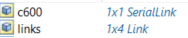
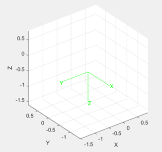
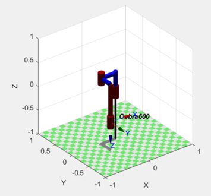
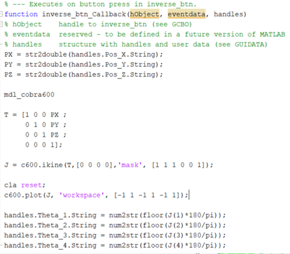
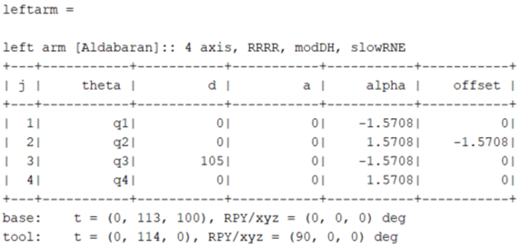

mdl_cobra600
Nesta página iremos estudar o robot mdl_cobra600 disponível na toolbox do Peter Corke. Para instanciarmos o Robot no Matlab podemos fazê-lo de duas maneiras distintas.
Podemos simplesmente usar o seguinte comando:
O comando irá criar o robot cobra600:
Juntamente com a criação do robot é criada uma pose para este que consiste no vetor [0 0 0 0] denominada “qz”.
Para vermos os parâmetros de Denavit-Hartenberg (DH) podemos utilizar o comando:
>> c600

Como podemos observar na tabela acima, o Cobra600 possui 4 juntas (1ª coluna), 3 dessas juntas são de rotação como podemos observar na 2ª coluna em que a junta1, 2 e 4 têm comportamento variável, e a outra junta (3) é prismática pois a variável encontra-se na coluna de deslocamento (d).Esta junta só poder ter valores positivos. A 4ª coluna define o comprimento do link, a coluna alpha a rotação do mesmo e a coluna offset o offset.
Podemos plotar o número de juntas do mesmo utilizando o seguinte comando:
>> c600.n
Resultado:
ans = 4
Caso pretendamos listar os links, por forma a visualizá-los de outra forma, podemos utilizar o seguinte comando:
>> c600.links
Podemos plotar o robot com a posição patrão qz:
>> c600.plot(qz);
Utilizando esta forma de instanciar o robot, para conseguirmos aumentar o espaço do workspace, temos de fazê-lo cada vez que efetuamos o plot do mesmo:
>> c600.plot(qz, 'workspace', [-1 1 -1 1 -1 1]); %estamos a criar um workspace de -1 a 1 no eixo x, -1 a 1 no eixo y e -1 a 1 no eixo zPodemos também utilizar o método teach() para simular movimentos do robot sem termos que estar constantemente a fazer plot:
>> c600.teach();
Tal como indicado acima, existe outra forma de instanciar o Robot e consiste em utilizar o código existente na toolbox no respetivo script:
>> links = [
Revolute('d', 0.387, 'a', 0.325, 'qlim', [-50 50]*pi/180);
Revolute('a', 0.275, 'alpha', pi, 'qlim', [-88 88]*pi/180);
Prismatic('qlim', [0 0.210]);
Revolute()
];
>> c600 = SerialLink(links, 'name', 'Cobra600', 'manufacturer', 'Adept', ...
'plotopt', {'workspace', [0 0.8 -0.6 0.6 0 0.4]} );
>> qz = [0 0 0 0];
o nosso caso, por forma a plotarmos sem ter que alterar o workspace nos nossos ambientes gráficos, utilizamos esta maneira de instanciar o robot e alteramos o tamanho do workspace da seguinte maneira:
>> c600 = SerialLink(links, 'name', 'Cobra600', 'manufacturer', 'Adept', ... 'plotopt', {'workspace', [-1 1 -1 1 -1 1]} );
Tudo o resto funcionará da mesma maneira.
Cinemática direta:
Podemos analisar a cinemática direta, utilizando os seguintes comandos:
>> c600.plot([pi pi/2 pi/4 0],'workspace', [-1 1 -1 1 -1 1]);

O comando efetuado acima criou o robot Cobra600 na pose que é possível visualizar, em que a primeira junta está com uma rotação de pi(180º) em relação ao mundo, a segunda pi/2(90º) em relação à primeira junta, a terceira pi/4(45º) em relação à segunda junta e a quarta 0º em relação à terceira junta.
De seguida utilizamos o método fkine que retorna a transformação homogênea representando a pose do end-effector:
>> T = c600.fkine([pi pi/2 pi/4 0]);

Na matriz que resulta do comando acima, podemos verificar a posição de cada junta do robot e as coordenadas x, y e z do end-effector.
De seguida podemos fazer o print e o plot dessas mesmas coordenadas para verificarmos onde fica no mundo a posição do end-effector:
>> T.print('xyz');
t = (-0.325, -0.275, -0.398), RPY/xyz = (90, 0, -180) deg
>> trplot(T, 'color', 'g');
Adicionando o robot com a seguinte forma, utilizando a pose definida para o fkine, podemos verificar que a posição do end-effector fica exatamente nas coordenadas o método fkine indicou:
>> hold on;
>> c600.plot([pi pi/2 pi/4 0],'workspace', [-1 1 -1 1 -1 1]);
Cinemática inversa:
No caso do robot cobra600, uma vez que se trata de um robot sub-atuado com apenas 4 juntas, apenas é possível efetuar a cinemática inversa fazendo utilização do método ‘Solução Numérica’, pois este tipo é limitado nas poses que o end-effector pode obter. Agarrando nas coordenadas definidas para a pose efetuada na cinemática direta temos:
t = (-0.325, -0.275, -0.398), RPY/xyz = (90, 0, -180) deg
Começamos por construir a matriz Ti (identidade) com essas mesmas coordenadas:
>> Ti = [1 0 0 -0.325 ;
0 1 0 -0.275 ;
0 0 1 -0.3984 ;
0 0 0 1];
Podemos imprimir a matriz para visualizarmos como ficou:
>> Ti
Aplicamos o método ikine sobre a matriz que acabamos de construir, por forma a ultrapassar o facto deste robot só ter as 4 juntas, temos que ignorar a rotação sobre o eixo x e y para quando é efetuado o cálculo do erro do end-effector. Para tal, temos que definir uma máscara ‘mask’ em que consiste num vetor que corresponde a três translações e três orientações nas coordenadas do end-effector (tx, ty, tz, rx, ry, rz):
>> I = c600.ikine(Ti,'mask', [1 1 1 0 0 1]);
Podemos agora imprimir os ângulos definidos pelo método utilizado para a cinemática inversa (Ikine):
>> I

Fazemos um reset ao espaço onde plotamos, caso ainda esteja aberto:
>> cla reset;
Efetuamos o plot do nosso Robot, utilizando a variável ‘I’ que contém os ângulos definidos pelo Ikine:
>> c600.plot(I, 'workspace', [-1 1 -1 1 -1 1]);
Calculamos a matriz para podermos comparar com a obtida no método da cinemática inversa e podemos observar que são diferentes, no entanto, obtivemos o mesmo resultado na medida que a pose do robot também leva o end-effector às mesmas coordenadas (‘xyz’):
>> Ta =c600.fkine(I);
>> Ta
Trajetórias e Mobilidade:
Iremos abordar as trajetórias e mobilidade de duas maneiras diferentes. A primeira será de um ponto inicial até um ponto final.
Começamos por instanciar o robot no caso de não estar:
>> mdl_cobra600
Neste primeiro exemplo iremos utilizar a pose predefinida qz e iremos instanciar uma nova para ser a final denominada qf:
qz:
>> qf = [pi/2 pi/4 pi/8 0]
De seguida definimos os tempos:
>> t = [0:.05:8];
O primeiro parâmetro é o início, o segundo o incremento e o ultimo o final, neste caso de 0 a 8 segundos com incrementos de 0.05.
Definimos a trajetória:
>> q = jtraj(qz, qf, t);
Efectuamos o plot:
>> c600.plot(q, 'workspace', [-1 1 -1 1 -1 1])
Video do movimento:
Podemos também efetuar a trajetória utilizando o mesmo método, mas de forma sequencial:
>> mdl_cobra600
Criamos o ponto final da primeira sequência:
>> qi = [pi/4 0 0 0]
Definimos o tempo que iremos utilizar na primeira sequência:
>> t = [0:.1:8]
Definimos a primeira sequência, com a posição inicial, final e o tempo:
>> it = jtraj(qz, qi, t);
Definimos a posição inicial da segunda sequência, que corresponde com a final da primeira:
>> qfi = [pi/4 0 0 0];
Definimos a posição final da segunda sequência:
>> qff = [pi/4 pi/6 0 pi];
Definimos o tempo da segunda sequência. Neste caso vamos utilizar tempos diferentes, mas podiam ser iguais:
>> tf = [0:.2:8];
Definimos a segunda sequência com os novos valores criados:
>> ft = jtraj(qfi, qff, tf);
Plotamos ambas as sequências pela ordem que queremos:
>> c600.plot(it, 'workspace', [-1 1 -1 1 -1 1]);
>> c600.plot(ft, 'workspace', [-1 1 -1 1 -1 1]);

Interface gráfica:
De forma a podermos experimentar de uma forma mais simples a cinemática direta e inversa, efetuamos a seguinte interface gráfica:
Conforme podemos observar, o gui permite-nos colocar os ângulos das juntas e carregar em forward onde é aplicada a cinemática direta.
A nível de código, estamos a receber os valores provenientes das quatro caixas de texto das juntas para dentro de variáveis e a multiplicar por pi/180 por forma a trabalharmos em graus no gui. De seguida estamos a instanciar o robot, a fazer um reset à área de plot para o caso de existir já algum gráfico e de seguida estamos a efetuar o plot dos ângulos definidos no ambiente gráfico, efetuamos o método fkine para irmos buscar as coordenadas x, y e z do end-effector e de seguida colocamo-las nas caixas de texto das coordenadas.
Carregando agora sem mudar as coordenadas no botão “Inverse”, é aplicada a cinemática inversa:
Como podemos observar os ângulos das juntas mudaram, no entanto, o end-effector ficou exatamente nas mesmas coordenadas. Podemos verificar graficamente também que a pose do Robot mudou, mas chegou ao mesmo destino.
A nível de código temos o seguinte:
Estamos a ir buscar os valores que estão nas caixas de texto das coordenadas x,y e z para dentro de variáveis, instanciamos o robot e de seguida definimos a matriz T com os valores de coordenadas provenientes das variáveis. Para aplicar a cinemática inversa aplicamos o método Ikine e de seguida fazemos reset ao ambiente de plot e fazemos o plot do resultado do método Ikine. Por último, colocamos os valores dos ângulos das juntas obtidos nas respetivas caixas de texto.
Efetuamos também um ambiente gráfico separado, para podermos simular os movimentos do robot definindo uma posição inicial, uma posição final e também podendo alterar os parâmetros do tempo:
Video do movimento com GUI:
Para testarmos, temos que colocar os ângulos das juntas iniciais e finais (ou deixar as que estão predefinidas) e configurar os parâmetros do tempo (início, fim e incremento) ou deixar os predefinidos. De seguida basta carregar em Run. O clear serve para limpar os dados.
Passando à explicação do código temos:
Vamos buscar os valores a todas as caixas de texto de todos os parâmetros, instanciamos o robot de forma manual, ignorando qz (pois não interessa a pose pois vamos estar a defini-las de forma dinâmica), de seguida agarramos nos ângulos da junta da pose inicial e colocamos em qz, da final colocamos em qi e os parâmetros do tempo colocamos em t. De seguida estamos a utilizar o método jtraj() para efetuar a trajetória, contendo a posição inicial, final e os tempos e de seguida plotamos para o workspace com tamanho -1 até 1 nos três eixos. Por fim, passamos os valores dos ângulos da pose final para as caixas de texto da pose inicial e colocamos a pose final a 0’s.
Voltar ao topo.
mdl_nao
Este script cria dois braços e duas pernas do robot, neste trabalho vamos estudar apenas um braço que representa 4DOF. Optamos por considerar o braço esquerdo, no entanto, o que vamos estudar aqui serve para ambos os braços.
Utilizando o seguinte comando instanciamos o robot:
>> mdl_nao
São criadas as seguintes variáveis:
A título de demostração, podemos plotar o robot completo utilizando os seguintes comandos:
>> leftleg.plot([0 0 0 0 0 0], 'workspace', 400*[-1 1 -1 1 -1 1]);
>> hold on
>> rightleg.plot([0 0 0 0 0 0], 'workspace', 400*[-1 1 -1 1 -1 1]);
>> leftarm.plot([0 0 0 0], 'workspace', 400*[-1 1 -1 1 -1 1]);
>> rightarm.plot([0 0 0 0], 'workspace', 400*[-1 1 -1 1 -1 1]);
Para o nosso estudo, podemos começar por listar os parâmetros de Denavit-Hartenberg (DH), para tal basta corrermos o seguinte comando:
Como podemos observar no quadro impresso, o braço possui quatro juntas, todas estas de rotação (uma vez que o angulo da junta (teta) é variável em todas as juntas). Podemos neste quadro também verificar a configuração do deslocamento (d), o comprimento (a), a rotação (alfa) e o offset.
Podemos plotar o braço, de forma a conhecermos visualmente o mesmo. Para tal fazemos o plot com as posições 0,0,0,0:
>> leftarm.plot([0 0 0 0])
Podemos também listar o número de juntas:
>> leftarm.n
ans = 4
De forma alternativa, podemos listar os links da seguinte maneira:
>> leftarm.links
Para conhecermos os movimentos do robot, podemos utilizar o método teach():
Podemos olhar para a construção manual do Robot, caso a pretendamos fazer, o código que instancia o braço é o seguinte:
leftarm = SerialLink( [
Revolute('d', 0, 'alpha', -pi/2, 'a', 0, 'modified')
Revolute('d', 0, 'alpha', pi/2, 'a', 0, 'offset', -pi/2, 'modified')
Revolute('d', UpperArmLength, 'alpha', -pi/2, 'a', 0, 'modified')
Revolute('d', 0, 'alpha', pi/2, 'a', 0, 'modified')
], ...
'base', transl(0, ShoulderOffsetY+ElbowOffsetY, ShoulderOffsetZ), ...
'tool', trotz(pi/2)*transl(HandOffsetX+LowerArmLength, 0, 0), ...
'plotopt', plotopts, ...
'name', 'left arm', 'manufacturer', 'Aldabaran');
Cinemática direta:
Podemos analisar a cinemática direta, utilizando os seguintes comandos:
>> leftarm.plot([pi/4 0 pi pi/2]);
O comando efetuado acima plotou o braço esquerdo na pose que é possível visualizar, em que a primeira junta está com uma rotação de pi/4(45º) em relação ao mundo, a segunda 0(0º) em relação à primeira junta, a terceira pi (180º) em relação à segunda junta e a quarta pi/2(90º) em relação à terceira junta.
De seguida utilizamos o método fkine que retorna a transformação homogênea representando a pose do end-effector:
>> T = leftarm.fkine([pi/4 0 pi pi/2]);
>> T
Na matriz que resulta do comando acima, podemos verificar a posição de cada junta do robot e as coordenadas x, y e z do end-effector.
De seguida podemos fazer o print e o plot dessas mesmas coordenadas para verificarmos onde fica no mundo a posição do end-effector:
>> T.print('xyz');
t = (74.2, -0.7, 25.8), RPY/xyz = (90, -45, 180) deg
>> trplot(T, 'color', 'r');
Adicionando o robot com a seguinte forma, utilizando a pose definida para o fkine, podemos verificar que a posição do end-effector fica exatamente nas coordenadas o método fkine indicou (podemos observar que o desenho das coordenadas estão sobrepostas aos eixos do end-effector a amarelo:
Cinemática inversa:
No caso do braço do robot mdl_nao, uma vez que se trata de um robot sub-atuado com apenas 4 juntas, apenas é possível efetuar a cinemática inversa fazendo utilização do método ‘Solução Numérica’, pois este tipo é limitado nas poses que o end-effector pode obter. Agarrando nas coordenadas definidas para a pose efetuada na cinemática direta temos:
t = (74.2, -0.7, 25.8), RPY/xyz = (90, -45, 180) deg
> T = leftarm.fkine([pi/4 0 pi pi/2]);
Aplicamos o método ikine sobre a matriz construída através da cinemática direte, por forma a ultrapassar o facto deste robot só ter as 4 juntas, temos que ignorar a rotação sobre o eixo x e y para quando é efetuado o cálculo do erro do end-effector. Para tal, temos que definir uma máscara ‘mask’ em que consiste num vetor que corresponde a três translações e três orientações nas coordenadas do end-effector (tx, ty, tz, rx, ry, rz):
>> Ti = leftarm.ikine(T,'mask',[1 1 1 0 0 1]);
>> Ti
Calculamos a matriz para podermos comparar com a obtida no método da cinemática inversa e podemos observar que são diferentes, no entanto, obtivemos o mesmo resultado na medida que a pose do robot também leva o end-effector às mesmas coordenadas (‘xyz’):
>> Tf = leftarm.fkine(Ti);
>> Tf

Como podemos constatar, os valores da Matriz T (calculados pela cinemática directa) são diferentes dos valores de Tf (pose obtida através da cinemática inversa, utilizando o método Ikine), no entanto, as coordenadas x,y e z são as mesmas.
Conforme podemos observar nas figuras, o braço tem a posição totalmente diferente mas chega ao mesmo ponto.
Directo:
Inverso:
Trajetórias e Mobilidade:
Iremos abordar as trajetórias e mobilidade de duas maneiras diferentes. A primeira será de um ponto inicial até um ponto final.
Começamos por instanciar o robot no caso de não estar:
>> mdl_nao
Iremos determinar os ângulos das juntas para a pose inicial:
>> qi = [0 0 0 0]

De seguida definimos os ângulos das juntas para a pose final:
>> qf = [pi/4 0 pi pi/2]
Por último definimos o tempo de inicio (0), o incremento (0.1) e o tempo de fim(8)
>> t = [0:.1:8];
Definimos a trajetória:
>> q = jtraj(qi, qf, t);
Efetuamos o plot do movimento:
>> leftarm.plot(q)

Video do movimento:
Podemos também efetuar uma trajetória com segmentos, utilizando o mesmo método.
Iniciamos a variável qi com os ângulos da pose inicial:
>> qi = [0 0 0 0]
Em qf colocamos os ângulos da posição final:
>> qf = [pi/4 0 pi pi/2]Iniciamos t com o tempo de início, o segmento e o final:
>> t = [0:.1:8];
Iniciamos q com o método jtraj que irá calcular a trajetória, onde dentro leva a pose inicial, a final e o tempo:
>> q = jtraj(qi, qf, t);
Iniciamos qfi, contendo esta variável a pose inicial deste segmento:
>> qfi = [pi/4 0 pi pi/2];
Em qff colocamos os ângulos para a pose final do segmento e da trajetória:
>> qff = [0 0 0 0]
Iniciamos r com o método jtraj que irá calcular a trajetória, dentro leva qfi, qff e o mesmo tempo que foi utilizado para a primeira trajetória:
> r = jtraj(qfi, qff, t);
Fazemos ambos os plots:
>> leftarm.plot(q)
>> leftarm.plot(r)

Video do movimento:
Interface gráfica:
Estamos a ir buscar os valores que estão nas caixas de texto das coordenadas x,y e z para dentro d e variáveis, instanciamos o robot e de seguida definimos a matriz T com os valores de coordenadas provenientes das variáveis. Para aplicar a cinemática inversa aplicamos o método Ikine e de seguida fazemos reset ao ambiente de plot e fazemos o plot do resultado do método Ikine. Por último, colocamos os valores dos ângulos das juntas obtidos nas respetivas caixas de texto.
Directa:
Conforme podemos observar, o gui permite-nos colocar os ângulos das juntas e carregar em forward onde é aplicada a cinemática direta.
A nível de código, estamos a receber os valores provenientes das quatro caixas de texto referentes aos angulos das juntas para dentro de variáveis e a multiplicar por pi/180 por forma a trabalharmos em graus no gui. De seguida estamos a instanciar o robot, a fazer um reset à área de plot para o caso de existir já algum gráfico e de seguida estamos a efetuar o plot dos ângulos definidos no ambiente gráfico, efetuamos o método fkine para irmos buscar as coordenadas x, y e z do end-effector e de seguida colocamo-las nas caixas de texto das coordenadas.
Carregando agora sem mudar as coordenadas no botão “Inverse”, é aplicada a cinemática inversa:
Inversa:
Como podemos observar os ângulos das juntas mudaram, no entanto, o end-effector ficou exatamente nas mesmas coordenadas. Podemos verificar graficamente também que a pose do Robot mudou, mas chegou ao mesmo destino.
A nível de código temos o seguinte:

Estamos a ir buscar os valores que estão nas caixas de texto das juntas obtidas no resultado da cinemática direta para dentro de variáveis, instanciamos o robot através do método fkine e de seguida aplicamos a cinemática inversa, utilizando o método ikine na matriz resultado da cinemática direta (indo buscar as coordenadas x,y e z) e utilizando uma máscara para ignorar a rotação em x e y. De seguida, aplicamos novamente o fkine sobre a cinemática inversa, de forma a obtermos a matriz e podermos comparar com a inicial (se aplicável, não está a imprimir no gui) e fazemos reset ao ambiente de plot. Por ultimo, fazemos o plot do resultado do método Ikine(J) e colocamos os valores dos ângulos das juntas obtidos nas respetivas caixas de texto.
Efetuamos também um ambiente gráfico separado, para podermos simular os movimentos do robot definindo uma posição inicial, uma posição final e também podendo alterar os parâmetros do tempo:
Video do GUI:
Para testarmos, temos que colocar os ângulos das juntas iniciais e finais (ou deixar as que estão predefinidas) e configurar os parâmetros do tempo (início, fim e incremento) ou deixar os predefinidos. De seguida basta carregar em Run. O clear serve para limpar os dados.
Passando à explicação do código temos:
Vamos buscar os valores a todas as caixas de texto de todos os parâmetros, instanciamos o robot de automática (utilizando o comando: mdl_nao), ignorando qz (pois não interessa a pose pois vamos estar a defini-las de forma dinâmica), de seguida agarramos nos ângulos da junta da pose inicial e colocamos em qz, da final colocamos em qi e os parâmetros do tempo colocamos em t. De seguida estamos a utilizar o método jtraj() para efetuar a trajetória, contendo a posição inicial, final e os tempos e de seguida plotamos para o workspace com tamanho -1 até 1 nos três eixos. Por fim, passamos os valores dos ângulos da pose final para as caixas de texto da pose inicial e colocamos a pose final a 0’s.
Voltar ao topo.Links Importantes:
Nesta secção temos dois links um para os videos e outro para os scripts dos ambientes gráficos para cada robot.
Videos Relatório:
RelatóriosScripts de ambientes gráficos:
Scripts dos ambientes gráfiosVoltar ao topo.